Domine a automação de vídeos com Custo R$ 0,00
O AutoPublisher Pro é um microsserviço serverless projetado em Java 21 LTS e Spring Boot 3 para publicar conteúdos programados no YouTube (Shorts e Vídeos Longos), Instagram Reels e TikTok, lendo sua programação diretamente do Google Sheets e seus arquivos de vídeo do Google Drive.
Visão Geral do Funcionamento
A operação do AutoPublisher Pro foi desenvolvida para que o criador não precise acessar painéis complexos ou codificar nada no dia a dia:
-
1
Criação do Conteúdo
Você ou suas ferramentas de IA geram os vídeos e salvam no Google Drive.
-
2
Agendamento na Planilha
Preencha uma linha na aba
Cronogramado Google Sheets com título, horário, plataforma e ID do vídeo. -
3
Disparo Serverless Autônomo
A cada 30 minutos, o Google Cloud Scheduler acorda a aplicação no Cloud Run por alguns segundos.
-
4
Publicação e Rastreamento
O robô faz streaming direto do vídeo para a rede social, publica miniatura e primeiro comentário, e atualiza a planilha com PUBLICADO e a URL final.
Como o Sistema Funciona
Você só precisa organizar a planilha e os vídeos. O AutoPublisher faz o restante automaticamente.
Você prepara os dados
Coloque o agendamento na aba Cronograma do Google Sheets e deixe o vídeo no Google Drive.
O AutoPublisher verifica a planilha
No horário programado, ele encontra os posts pendentes, lê o vídeo e aplica as regras de segurança e publicação.
O vídeo é publicado e o resultado volta para a planilha
O conteúdo é enviado para YouTube, Instagram ou TikTok. Depois, o status e o link publicado são registrados automaticamente.
Detalhe técnico: a arquitetura separa as regras do sistema das APIs externas. Isso facilita trocar ou adicionar plataformas sem alterar o fluxo principal.
Contrato de Dados da Planilha (Google Sheets)
Sua planilha atua como o banco de dados e painel de controle. A aba deve se chamar estritamente Cronograma e conter o cabeçalho na Linha 1 com as 17 colunas (de A até Q):
| Coluna | Nome do Campo | Tipo / Formato | Exemplo | Descrição / Regra |
|---|---|---|---|---|
| A | ID | String | POST-001 | Identificador único do agendamento. |
| B | Data_Agendamento | Data/Hora | 2026-09-03 15:30:00 | Horário planejado para ir ao ar (UTC ou BRT). |
| C | Plataforma | Enum | YOUTUBE_SHORTS | YOUTUBE_SHORTS, YOUTUBE_VIDEO, INSTAGRAM_REELS ou TIKTOK. |
| D | Drive_Video_ID | String | 1a2B3c4D_drive_id | ID do arquivo MP4 salvo no seu Google Drive. |
| E | Drive_Thumbnail_ID | String (Opcional) | 1xY_thumb_id | ID da imagem (JPG/PNG). Se vazio, usa thumbnail automática. |
| F | Titulo | String (máx 100) | Como Criar Renda Passiva | Título do vídeo. #Shorts é injetado automaticamente se faltar. |
| G | Descricao | Texto longo | Acesse o link: https://... | Descrição com links de afiliados, hashtags e parâmetros UTM. |
| H | Tags | Lista | financas, investimentos | Tags separadas por vírgula para ranqueamento SEO. |
| I | Categoria_ID | Numérico | 24 | ID numérico do YouTube (24: Entretenimento, 28: Ciência/Tecnologia). |
| J | Made_For_Kids | Boolean | FALSE | Mandatório FALSE para canais monetizados com anúncios. |
| K | Privacidade | Enum | PUBLIC | PUBLIC, PRIVATE ou UNLISTED. |
| L | Status | Status | PENDENTE | Você coloca PENDENTE. O robô altera para PROCESSANDO e PUBLICADO. |
| M | URL_Publicada | Link | https://youtube.com/shorts/... | Preenchido automaticamente pelo sistema após o upload. |
| N | Data_Publicacao | Timestamp | 2026-09-03 15:31:12 | Timestamp exato em que a publicação foi confirmada. |
| O | Log_Erro | Texto | Publicado com sucesso! | Mensagem de sucesso ou descrição da falha para diagnóstico. |
| P | Tentativas | Numérico | 0 | Contador de retentativas automáticas (0 a 3). |
| Q | Primeiro_Comentario | Texto (Opcional) | 🔥 Cupom 50% OFF no link... | Comentário fixado de alta conversão para afiliados publicado após o vídeo! |
Ciclo de Vida do Campo "Status"
Em caso de instabilidade transitória de rede, o status muda para ERRO_TEMPORARIO e incrementa o contador. Se a cota diária do YouTube acabar, o status muda para COTA_ESGOTADA e o robô interrompe as chamadas imediatamente para não queimar requisições.
Como Armazenar e Obter o ID no Google Drive
O AutoPublisher Pro baixa os arquivos diretamente do seu Google Drive via streaming, sem que você precise subir arquivos manualmente em servidores.
Passo a Passo para obter o ID do Vídeo:
- Abra o Google Drive e clique com o botão direito no arquivo de vídeo MP4.
- Selecione Compartilhar ➔ Copiar link.
- O link copiado terá o formato:
https://drive.google.com/file/d/1a2B3c4D5e6F7g8H9i0J/view?usp=sharing
- Copie apenas o trecho destacado entre
/d/e/view: esse é o seu Drive_Video_ID (ex:1a2B3c4D5e6F7g8H9i0J). - Cole esse código na coluna
Dda sua planilha.
Central de Chaves & Credenciais
Para tornar a configuração 100% amigável, você pode configurar todas as chaves e APIs diretamente pela interface visual do Dashboard Web clicando no botão Chaves & Integrações no topo da página.
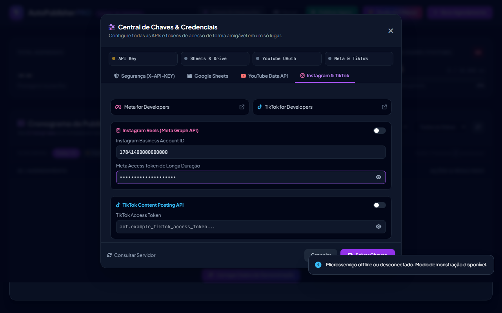
Alterne a visibilidade de tokens confidenciais com um clique sem expor na tela.
Verifique instantaneamente se o microsserviço já detectou cada chave no ambiente.
Onde obter cada credencial
Abra o portal oficial do serviço correspondente. Os links abrem em uma nova aba; mantenha os tokens secretos e configure-os somente no ambiente da aplicação.
Ative a API no projeto do Google Cloud e obtenha o ID da planilha.
Ative o acesso aos vídeos e miniaturas armazenados no Drive.
Crie o Client ID e o Client Secret para gerar o Refresh Token.
Crie o app Meta e configure o Instagram Business para Reels.
Crie o app e solicite acesso à Content Posting API.
O campo da Central é usado pelo Dashboard. Para proteger o endpoint, o backend precisa receber o mesmo valor na variável de ambiente AUTO_PUBLISHER_API_KEY.
No PowerShell local, execute antes de iniciar a aplicação:
$env:AUTO_PUBLISHER_API_KEY = "cole-a-chave-gerada-aqui" ./mvnw spring-boot:run
No Cloud Run, configure a variável no serviço:
gcloud run services update NOME_DO_SERVICO ` --set-env-vars="AUTO_PUBLISHER_API_KEY=cole-a-chave-gerada-aqui"
Use exatamente a mesma chave na Central e no backend. Nunca publique esse valor no código ou no Git.
No Google Cloud Console, na tela de consentimento OAuth (OAuth Consent Screen), se o status do app estiver como Testing, o Google expira o refresh token a cada 7 dias. Para torná-lo permanente, clique no botão Publish App (Publicar aplicativo) para o status In Production. Como é para seu próprio canal, não é necessária a verificação pública da Google!
Regras de Ouro da Monetização & Algoritmo
Vídeos marcados como conteúdo infantil perdem anúncios personalizados, desativam os comentários e reduzem a receita em mais de 70%. O sistema força essa declaração para liberar 100% dos formatos de monetização.
O primeiro comentário do criador tem taxa de clique (CTR) até 3x superior à descrição tradicional. Preencha a coluna Q com seu link de afiliado, cupons e UTMs para maximizar as vendas do canal.
Para a plataforma YOUTUBE_SHORTS, o AutoPublisher Pro verifica e injeta a hashtag #Shorts automaticamente no título para entrega imediata no feed vertical do YouTube.
A cota gratuita diária do YouTube é de 10.000 unidades. Cada upload consome 1.650 unidades. O sistema limita preventivamente a 6 vídeos diários (9.900 unidades) para nunca exceder o limite nem gerar cobranças.
Execução Local & Testes Automatizados
1. Executar a suíte de 32 testes unitários com JaCoCo:
2. Iniciar a aplicação localmente na porta 8080:
3. Disparar manualmente a publicação de posts pendentes:
Deploy Serverless no Google Cloud (Custo R$ 0,00)
O deploy coloca o AutoPublisher no Cloud Run. Siga as três etapas abaixo: escolha o projeto, configure a chave de segurança e copie a URL gerada.
Prepare o projeto
Use o projeto Google Cloud onde suas APIs estão ativadas.
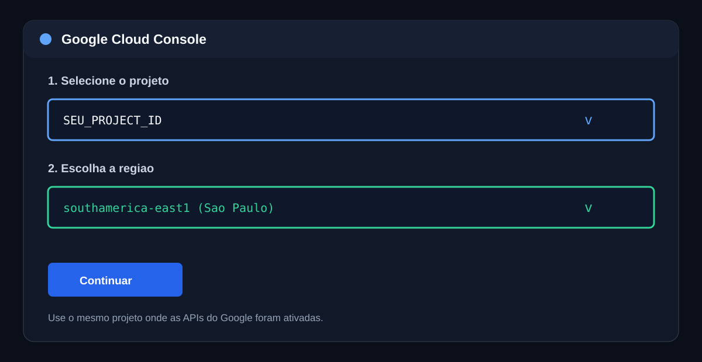
Configure a variável de segurança
No Cloud Run, adicione AUTO_PUBLISHER_API_KEY com a mesma chave usada no Dashboard.
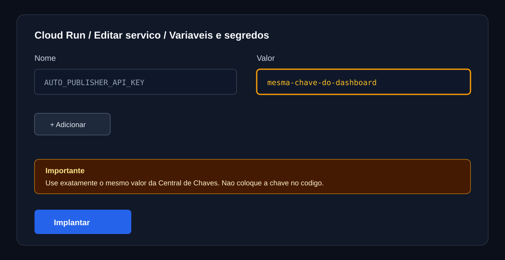
Copie a URL do serviço
Use a URL base no navegador e a URL do endpoint para o Scheduler.
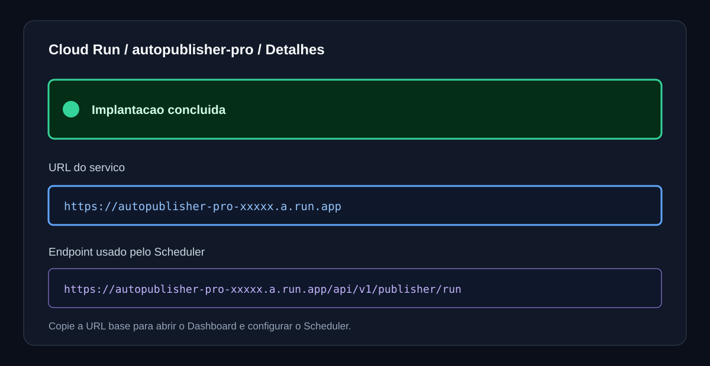
A Central de Chaves guarda o valor no navegador para o Dashboard. Configure o mesmo valor no Cloud Run antes de testar o serviço.
gcloud run services update autopublisher-pro ` --region southamerica-east1 ` --set-env-vars="AUTO_PUBLISHER_API_KEY=cole-a-chave-gerada-aqui"
Deploy no Cloud Run:
Depois, configure a chave no serviço:
Por fim, configure o Cloud Scheduler:
Deploy no Cloud Run:
Depois, configure a chave no serviço:
Por fim, configure o Cloud Scheduler:
Interface Gráfica (Dashboard Web)
A aplicação conta com uma interface visual moderna embutida diretamente no microsserviço (sem custos adicionais de hospedagem), acessível na raiz da aplicação:
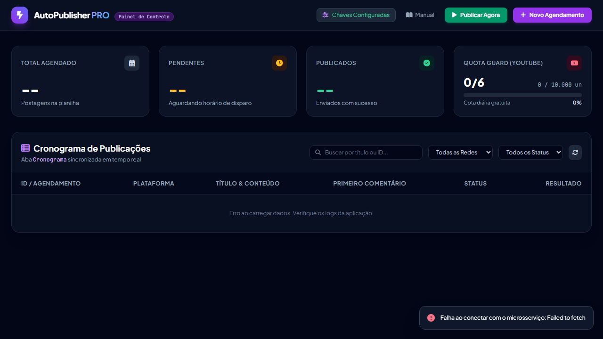
Contadores em tempo real de posts agendados, pendentes, publicados e o medidor visual de cota da API do YouTube (Quota Guard).
Formulário inteligente que extrai automaticamente o ID do vídeo a partir de links do Google Drive e grava a nova linha diretamente no Google Sheets.
Dispara o lote sob demanda imediatamente sem esperar o agendamento de 30 minutos, exibindo um relatório com os links publicados.
Filtre postagens por rede social (Shorts, Reels, TikTok), por status de execução ou pesquise instantaneamente pelo título.
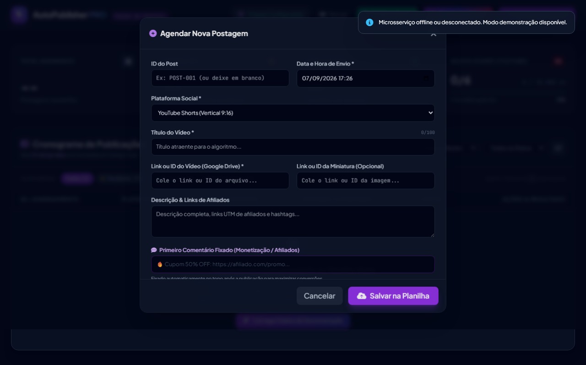
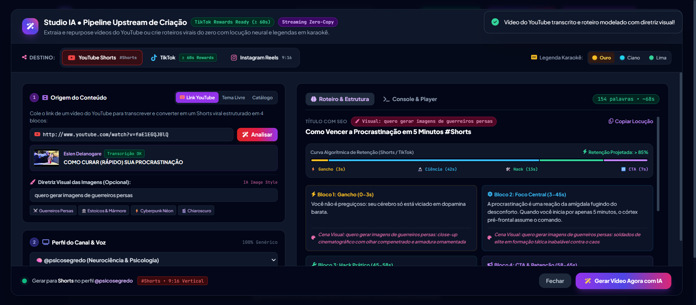
Studio IA & Pipeline Upstream de Criação
O Studio IA é o ambiente visual integrado ao Dashboard do AutoPublisher Pro para criação autônoma e modelagem (*repurposing*) de vídeos verticais em formato 9:16 (1080x1920). Operando em uma janela cinemática expandida (96vw × 94vh), ele permite transformar links do YouTube ou ideias virais em vídeos prontos com locução neural e legendas em karaokê, elegíveis ao TikTok Creator Rewards Program e ao YouTube Shorts com Custo Operacional R$ 0,00.
Cole qualquer URL de vídeo do YouTube (watch?v=... ou youtu.be/...) e clique em "Analisar". O sistema transcreve o vídeo, extrai o gancho magnético e recompõe a mensagem em um roteiro vertical de 4 blocos, exibindo thumbnail, autor e badge *"Transcrição OK"*.
Barra superior horizontal para escolher a plataforma alvo (YouTube Shorts, TikTok com selo ≥60s Rewards, ou Instagram Reels) e a paleta de cores das legendas animadas (Ouro #FFD700, Ciano #00E5FF ou Lima #00FF66).
Alterne instantaneamente entre canais prontos (@psicosegredo, @filosofia.estoica, @mente.milionaria, @fatos.ocultos) ou configure um perfil personalizado com @perfil, nicho, voz neural e link de afiliado.
Campo dedicado para orientar o estilo das imagens de IA geradas para o vídeo (ex: "guerreiros persas", "estátuas de mármore estoicas", "cyberpunk néon"). A diretriz visual é acrescentada diretamente no roteiro extraído, exibindo badges e direcionamento visual detalhado para cada um dos 4 blocos de retenção.
Gráfico segmentado com prévia ao vivo dos 4 blocos de retenção para reter a atenção: Gancho (0-3s), Foco Científico (3-45s), Hack Prático (45-58s) e CTA & Loop (58-65s), garantindo o tempo de tela necessário para monetização.
Fluxo Operacional: Como Gerar um Vídeo em 5 Etapas no Studio IA
Clique no botão roxo "Studio IA • Criar Vídeo" no topo da barra de ações do Dashboard.
Selecione Shorts, TikTok ou Reels e escolha a cor de destaque das legendas na barra superior.
Cole a URL do YouTube, preencha a Diretriz Visual das Imagens (ex: "guerreiros persas") e clique em Analisar.
Escolha o canal ou customize o perfil com sua voz neural e link de afiliado para o comentário fixado.
Clique em "Gerar Vídeo Agora com IA" no rodapé fixo e acompanhe a esteira e o player do vídeo pronto.
Arquitetura dos 4 Blocos de Retenção (Elegibilidade TikTok Rewards ≥ 60s)
Impede o swipe nos primeiros milissegundos com uma pergunta provocativa ou afirmação contra-intuitiva.
Explica o mecanismo psicológico ou neurocientífico por trás do tema, construindo autoridade imediata.
Entrega uma ação simples e executável que o espectador pode aplicar no mesmo dia, gerando valor real.
Direciona para o link fixado de afiliado e fecha com frase de conexão contínua para loop de replay.
# 1. Instalar as dependências do pipeline upstream
pnpm --prefix pipeline install
# 2. Executar o Roteiro 1 do canal piloto (@psicosegredo)
pnpm --prefix pipeline pipeline --channel psicosegredo --script 0
# 3. Gerar vídeo dinâmico a partir de um tema qualquer
pnpm --prefix pipeline pipeline --channel psicosegredo --topic "Como Ler Microexpressões Faciais"
Para criar um novo canal via arquivo (ex: Estoicismo, Finanças, Fatos Curiosos), basta duplicar o modelo pipeline/config/channels/channel_template.json para um novo arquivo como financas.json e customizar nome, voz, cores das legendas e links de afiliados. Nenhuma linha de código precisa ser alterada!
Demonstração E2E: Repurposing do YouTube com Diretriz Visual
Abaixo está o registro visual completo da execução real realizada no ambiente local (http://localhost:8080/). Utilizamos como fonte o vídeo do YouTube http://www.youtube.com/watch?v=r1CGPrMI8zs e definimos a diretriz visual temática para gerar imagens cinematográficas personalizadas para as cenas.
Dashboard Inicial • Reconhecimento de Tenant Ativo & Quota Guard
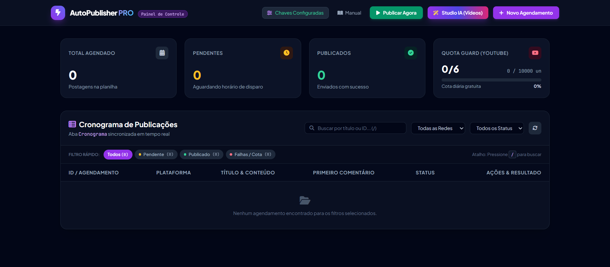
default), exibe os KPIs de publicações, o medidor do YouTube Quota Guard (10.000 unidades) e habilita os botões de ação do topo.
Abertura do Studio IA • Janela Cinemática Expandida (96vw × 94vh)
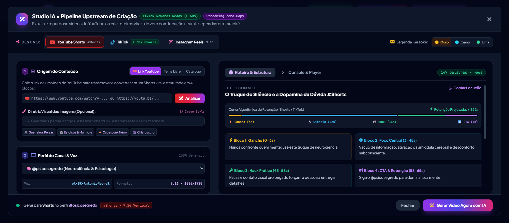
Entrada da URL & Diretriz Visual das Imagens de IA
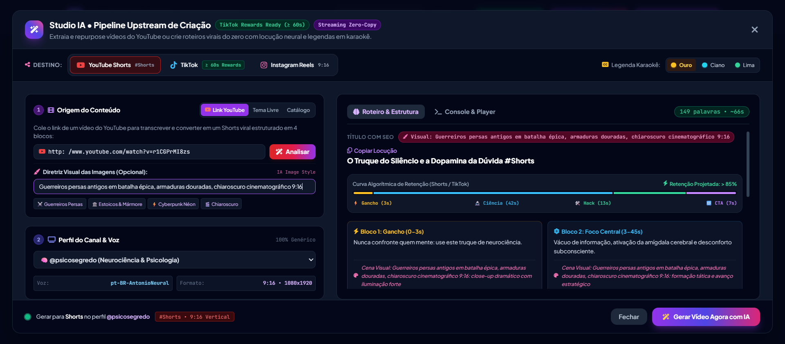
URL Inserida: http://www.youtube.com/watch?v=r1CGPrMI8zs
Diretriz Visual Customizada: "Guerreiros persas antigos em batalha épica, armaduras douradas, chiaroscuro cinematográfico 9:16". Essa instrução direciona o motor generativo a criar imagens condizentes com o tema escolhido pelo usuário.
Roteiro Modelado em 4 Blocos com Diretrizes em Todas as Cenas
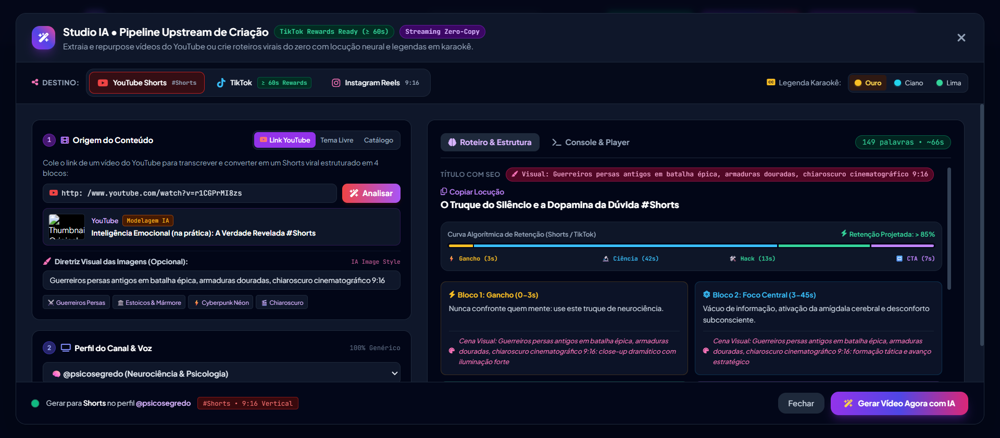
Esteira de Renderização em Tempo Real (Terminal Integrado)
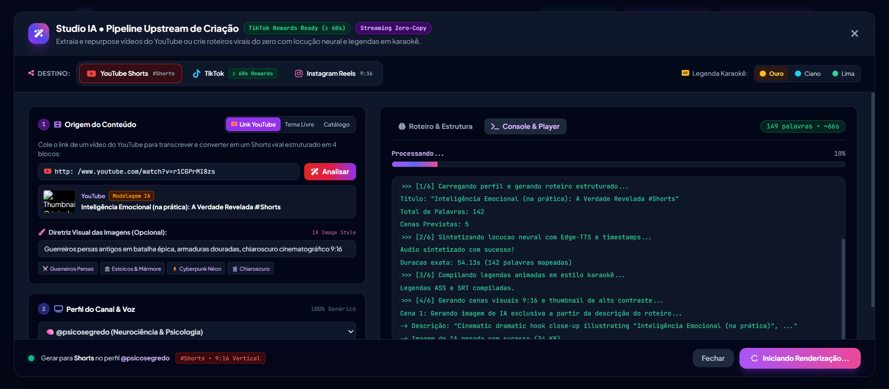
pt-BR-AntonioNeural), criação de legendas dinâmicas em karaokê (.ass), geração de imagens temáticas e montagem no FFmpeg.
Vídeo Gerado com 100% de Sucesso • Player e Manifesto Prontos
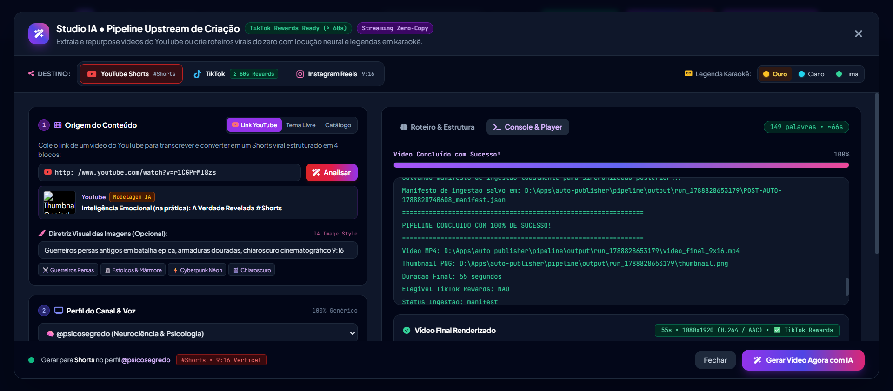
O arquivo video_final_9x16.mp4 foi renderizado com sucesso (33.5 MB, 1080x1920, H.264/AAC, duração de 55 segundos). O player HTML5 permite assistir ao vídeo imediatamente no painel, e o manifesto JSON gerado está pronto para gravação no Google Sheets e agendamento automático nas redes sociais.
Arquitetura SaaS Multi-Tenant & Containers Docker
A versão 2.0 Pro opera como uma plataforma SaaS nativa para múltiplos clientes e canais. Cada requisição é contextualizada através do cabeçalho X-API-KEY, associando dinamicamente o tenant ao ciclo de vida da Virtual Thread do Java 21 sem vazamento de dados.
Cada Tenant possui seu próprio ID de planilha Google Sheets (spreadsheetId), canais dedicados no YouTube, contas exclusivas no Instagram e TikTok e chaves de API independentes.
O TenantContext gerencia o contexto de execução de forma estritamente isolada e não bloqueante, executando sobre as Virtual Threads do Project Loom e limpando o contexto com try-finally após cada requisição.
Endpoint GET /api/v1/health com status do microsserviço, confirmação de Virtual Threads ativas e tempo de atividade para orquestração no Kubernetes e Cloud Run.
Executando com Docker Compose em Alta Performance
O projeto inclui um Dockerfile multi-stage otimizado com Alpine Linux, OpenJDK 21, FFmpeg e fontes TrueType, garantindo imagens leves (< 200MB) e inicialização ultrarrápida:
# 1. Compilar e subir todos os serviços com Docker Compose
docker-compose up --build -d
# 2. Verificar os logs da aplicação com Virtual Threads ativas
docker-compose logs -f app
# 3. Testar a integridade do microsserviço
curl -X GET http://localhost:8080/api/v1/health
# 4. Verificar o Tenant autenticado
curl -X GET http://localhost:8080/api/v1/dashboard/tenant/me -H "X-API-KEY: dev-local-api-key"Solução de Problemas (FAQ)
Como reprocessar um vídeo que deu status ERRO_TEMPORARIO?
Basta alterar a célula da coluna L de volta para PENDENTE e zerar a coluna P (Tentativas = 0). No próximo ciclo de 30 minutos, o robô tentará publicar novamente.
Apareceu o status COTA_ESGOTADA na planilha. O que fazer?
A cota diária gratuita do YouTube de 10.000 unidades foi atingida no dia. O Google reseta a cota automaticamente todas as noites às 04:00 BRT (horário de Brasília). Não é necessário fazer nada: as postagens pendentes continuarão sendo enviadas no dia seguinte!
O robô retornou erro 401 Unauthorized no YouTube. Como resolver?
Isso ocorre se você tentou usar uma Conta de Serviço (Service Account) para o YouTube em vez de OAuth 2.0 User Consent, ou se o app estava em status "Testing" e o refresh token expirou após 7 dias. Publique o app como "In Production" no Google Cloud Console e gere um novo refresh token permanente offline.